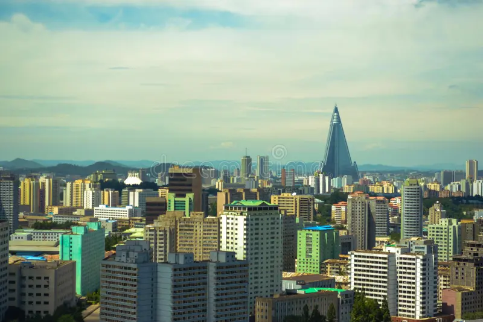
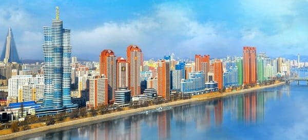
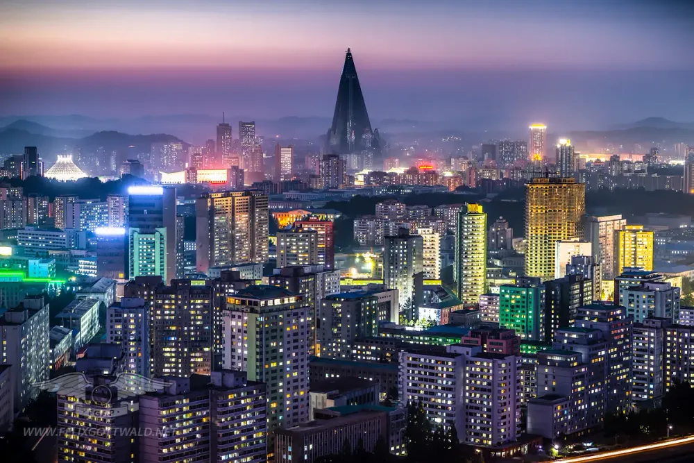
북한
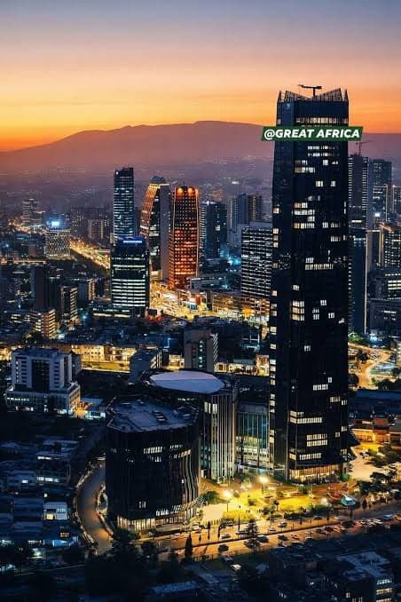
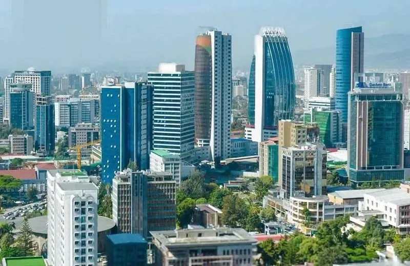
에티오피아
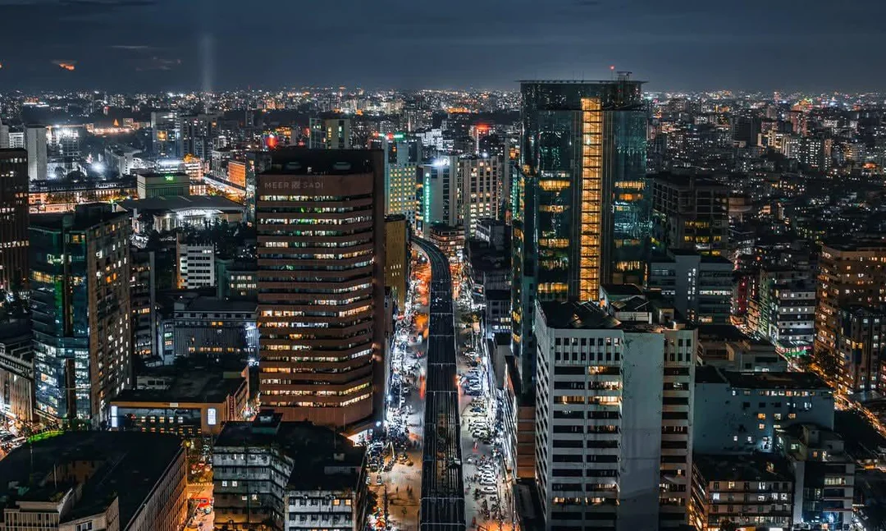
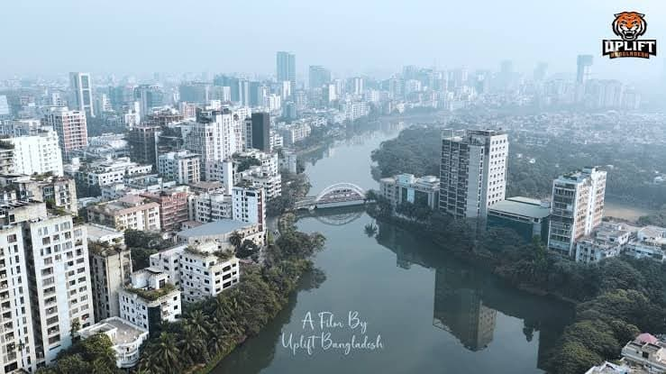
방글라데시
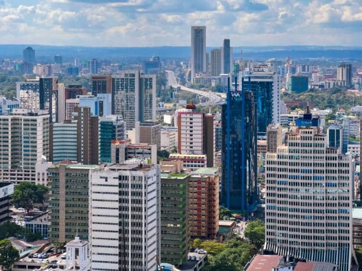
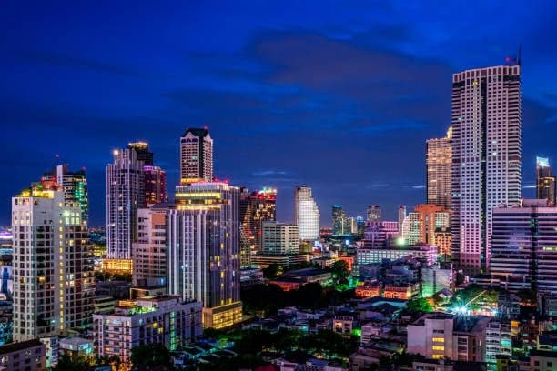
케냐 나이로비
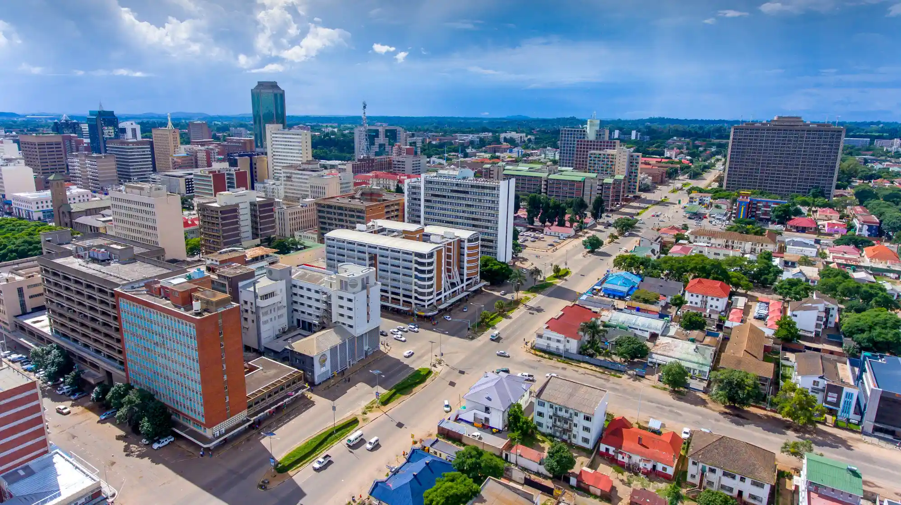
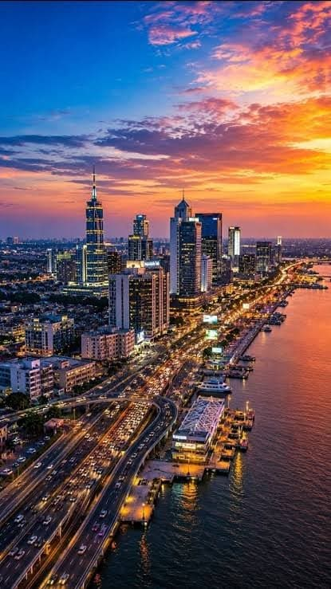
짐바브웨

사실 대단한게 아니라
웬만한 병신나라도 사진각도 조절해서 잘 찍으면 저정도는 나옴











댓글
수집 당시 댓글 115개
꿀바른미네랄 · 11.02 21:41:50
· ㅇㅇ · 11.04 10:03:49
밋아 · 11.02 22:13:34
저먼스플렉스 · 11.02 22:14:15
ㅇㅇ · 11.02 23:49:38
ㅇㅇ · 11.02 23:57:38
땨뗘(봇) · 11.04 08:00:06
JungNu · 11.04 08:00:09
ㅇㅇ · 11.04 08:01:48
ㅇㅇ · 11.04 08:01:56
· ㅇㅇ · 11.04 08:16:34
· ㅇㅇ · 11.04 08:24:04
ㅇㅇ · 11.04 08:02:42
.. · 11.04 08:03:20
· ㅇㅇ · 11.04 08:08:55
ㅇㅇ · 11.04 08:04:52
2456778 · 11.04 08:07:20
ㅇㅇ · 11.04 08:07:28
ㅇㅇ · 11.04 08:08:11
· ㅇㅇ · 11.04 14:11:00
· ㅇㅇ · 11.04 14:57:18
ㅇㅇ · 11.04 08:08:44
· ㅇㅇ · 11.04 08:09:22
· ㅇㅇ · 11.04 08:10:04
つついあやめのおっと · 11.04 08:10:14
ㅇㅇ · 11.04 08:10:28
ㅇㅇ · 11.04 08:10:57
ㅇㅇ · 11.04 08:12:06
ㅇㅇ · 11.04 08:13:38
ㅇㅇ · 11.04 08:16:30
ㅇㅇ · 11.04 08:16:58
ㅇㅇ · 11.04 08:19:06
· ㅇㅇ · 11.04 08:19:27
· ㅇㅇ · 11.04 08:21:01
· つついあやめのおっと · 11.04 08:23:39
· ㅇㅇ · 11.04 08:26:42
· つついあやめのおっと · 11.04 08:34:05
· DD · 11.04 08:37:04
· ㅇㅇ · 11.04 08:38:37
· ㅇㅇ · 11.04 08:51:47
ㅇㅇ · 11.04 08:21:08
· ㅇㅇ · 11.04 08:21:38
ㅇㅇ · 11.04 08:22:10
잘사
니깐
· ㅇㅇ · 11.04 08:22:22
지원
하지마
ㅇㅇ · 11.04 08:24:06
· ㅇㅇ · 11.04 13:01:55
ㅇㅇ · 11.04 08:25:37
새벽 · 11.04 08:26:10
ㅇㅇ · 11.04 08:28:07
ㅇㅇ · 11.04 08:34:39
ㅇㅇ · 11.04 08:34:44
ㅇㅇ · 11.04 08:46:56
· ㅇㅇ · 11.04 14:12:11
ㅇㅇ · 11.04 08:51:43
ㅇㅇ · 11.04 09:02:40
ㅇㅇ · 11.04 09:02:53
· ㅇㅇ · 11.04 09:03:21
· ㅇㅇ · 11.04 09:04:01
· ㅇㅇ · 11.04 10:35:30
실베현자 · 11.04 09:22:01
04T · 11.04 09:24:47
ㅇㅇ · 11.04 09:28:17
ㅇㅇ · 11.04 09:42:51
· ㅇㅇ · 11.04 09:44:49
ㅇㅇ · 11.04 09:45:51
· ㅇㅇ · 11.04 13:03:13
· ㅇㅇ · 11.04 14:13:30
· ㅇㅇ · 11.04 14:17:04
ㅇㅇ · 11.04 09:59:20
좌파사냥 · 11.04 09:59:43
o o · 11.04 10:09:29
ㅇㅇ-땃지사랑꾼 · 11.04 10:10:09
ㅇㅇ · 11.04 10:11:16
· ㅇㅇ · 11.04 10:11:48
ㅇㅇ · 11.04 10:26:13
좃구녕 · 11.04 10:30:14
ㅇㅇ · 11.04 10:37:03
ㅇㅇ · 11.04 11:38:38
ㅇㅇ · 11.04 11:46:48
kawa · 11.04 11:48:50
ㅇㅇ · 11.04 12:22:05
ㅇㅇ · 11.04 12:22:07
ㅇㅇ · 11.04 12:23:56
ㅇㅇ · 11.04 12:44:45
불호령 · 11.04 12:52:26
ㅇㅇ · 11.04 13:03:34
· ㅇㅇ · 11.04 13:04:03
· ㅇㅇ · 11.04 13:04:35
ㅇㅇ · 11.04 13:56:32
ㅇㅇ · 11.04 14:46:42
ㅇㅇ · 11.04 15:22:04
ㅇㅇ · 11.04 15:22:25
ㅇㅇ · 11.04 18:42:37
ㅇㅇ · 11.04 18:42:51
ㅇㅇ · 11.04 18:45:30
ㅇㅇ · 11.04 18:45:33
ㅇㅇ · 11.04 18:45:38
ㅇㅇ · 11.04 18:45:42
ㅇㅇ · 11.04 18:45:45
환란 전 교회 휴거 · 11.04 23:34:35
몽이유랑단 · 11.02 20:17:47
· 개꼴통청년 · 11.02 20:23:49
· ㅇㅇ · 11.04 10:27:49
개꼴통청년 · 11.02 20:23:56
돼지국밥 · 11.02 20:52:57
ㅇㅇ · 11.02 21:07:53
· ㅇㅇ · 11.02 21:38:30
· ㅇㅇ · 11.04 09:28:36
ㅇㅇ · 11.02 21:10:40
· ㅇㅇ · 11.02 21:20:19
ㅇㅇ · 11.02 21:20:46
· ㅇㅇ · 11.04 08:12:47
· ㅇㅇ · 11.04 08:17:06
· ㅇㅇ · 11.04 08:17:52
· ㅇㅇ · 11.04 08:19:40